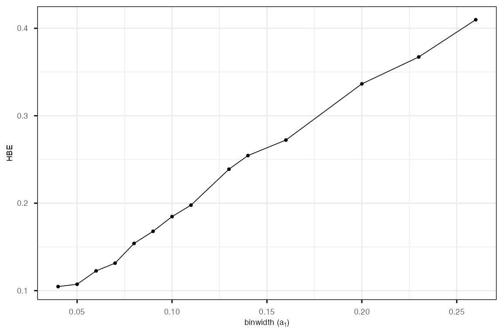

6. Selecting the optimal bin width
Source:vignettes/quollr6bestbinwidth.Rmd
quollr6bestbinwidth.RmdWe demonstrate how to identify the optimal bin width for hexagonal binning in the 2-D embedding space. Selecting an appropriate bin width is crucial for balancing model complexity and prediction accuracy when comparing structures between high-dimensional data and their 2-D layout.
We begin by computing model errors across a range of bin width values
using the gen_diffbin1_errors() function. This function
fits models for multiple bin widths and returns hexbin error (HBE)
values for each configuration.
error_df_all <- gen_diffbin1_errors(highd_data = scurve,
nldr_data = scurve_umap)
error_df_all <- error_df_all |>
mutate(a1 = round(a1, 2)) |>
filter(b1 >= 5) |>
group_by(a1) |>
filter(HBE == min(HBE)) |>
ungroup()We round the bin width values (a1), filter for
sufficient bin resolution (b1 >= 5), and select the
configuration with the lowest HBE for each unique bin width.
error_df_all |>
arrange(-a1) |>
head(5)
#> # A tibble: 5 × 9
#> Error HBE b1 b2 b m a1 a2 d_bar
#> <dbl> <dbl> <int> <dbl> <dbl> <int> <dbl> <dbl> <dbl>
#> 1 629. 0.410 5 7 35 22 0.26 0.23 0.0409
#> 2 563. 0.367 6 8 48 27 0.23 0.2 0.0369
#> 3 520. 0.336 7 9 63 33 0.2 0.17 0.0323
#> 4 430. 0.272 8 11 88 46 0.16 0.14 0.0260
#> 5 407. 0.254 9 12 108 51 0.14 0.12 0.0255The plot below shows the relationship between bin width
(a1) and HBE. The goal is to identify a bin width that
minimizes HBE while avoiding overly coarse or fine binning.
ggplot(error_df_all,
aes(x = a1,
y = HBE)) +
geom_point(size = 0.8) +
geom_line(linewidth = 0.3) +
ylab("HBE") +
xlab(expression(paste("binwidth (", a[1], ")"))) +
theme_minimal() +
theme(panel.border = element_rect(fill = 'transparent'),
plot.title = element_text(size = 12, hjust = 0.5, vjust = -0.5),
axis.ticks.x = element_line(),
axis.ticks.y = element_line(),
legend.position = "none",
axis.text.x = element_text(size = 7),
axis.text.y = element_text(size = 7),
axis.title.x = element_text(size = 7),
axis.title.y = element_text(size = 7))